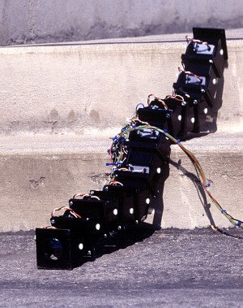

INTRODUCCIÓN
Trabajo desarrollado en la asignatura de doctorado "Trabajo tutetalo"",
curso 2001-2002, de la E.T.S de Informatica de la UAM. Mi tutor ha sido el profesor:
Eduardo Boemo-Scalvinoni,
AUTOR:
- Juan Gonzalez Gomez. Septiembre-2002
LICENCIA:
Este trabajo se encuentra bajo LICENCIA FDL (Free Documentation License).
DESCRIPCIÓN
En este trabajo se destacan las principales líneas de investigación en robots tipo ápodo. Los robots ápodos, o más conocidos como robots serpiente (snake robots), intentan imitar a estos animales, tanto en su comportamiento como en sus propiedades, para resolver diferentes problemas, como son la inspección de zonas de difícil acceso, tuberías, alcantarillas, zonas con muchos obstáculos, robots escaladores, endoscopios, etc. En este trabajo se muestran los modelos más significativos que se están desarrollando en los principales cenros de investigación, analizando las tecnologías y los problemas que se resuelven.
En esta foto puedes ver un robot serpiente modular, que está bajando unas escaleras, desarrollado en el Palo Alto Research Center PARC:

CONCLUSIONES:
- En casi todos los robots analizados existe una tendencia a la modularización, estando constituidos por módulos iguales que se repiten
- Nuevos conceptos: robótica modular reconfigurable. Se construyen robots muy complejos a partir de módulos muy sencillos (y además pueden cambiar de forma). El PARC es el punto de referencia. Allí se han desarrollado los robots ápodos más interesantes y versátiles
- Tendencia a la distribución de la inteligencia a lo largo del robot
- Amplia utilización del BUS CAN para la comunicación entre todas las partes
- Los motores empleados principalmente son servomecanismos de aeromodelismo, de bajo coste
ENLACES:
DOWNLOAD
NOTICIAS
02/Dic/2002: Publicado este trabajo